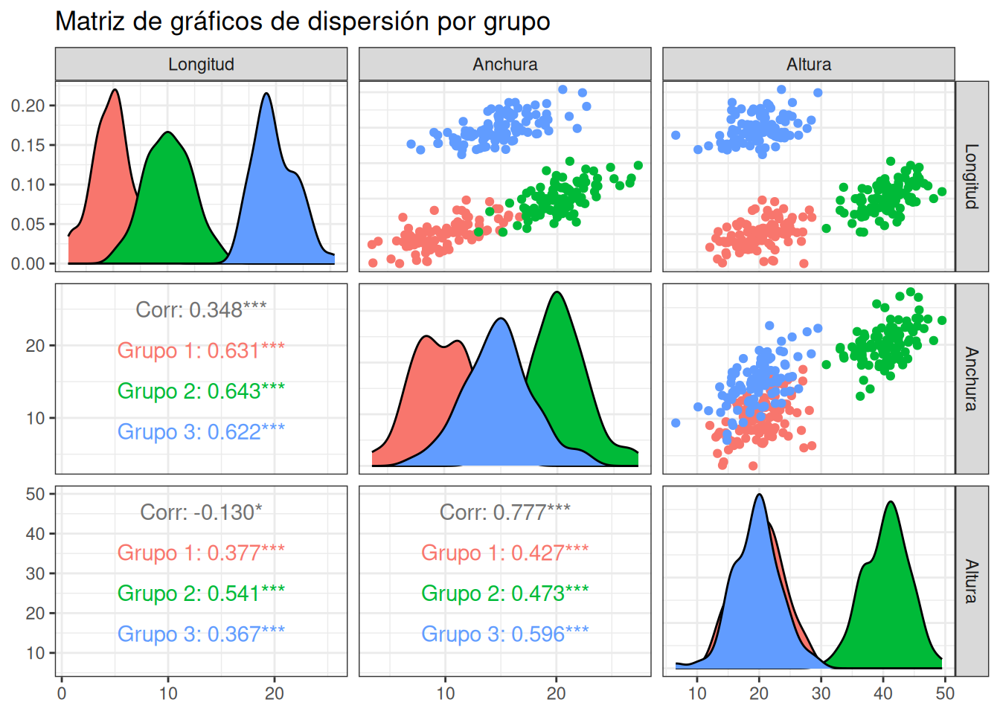

Para eliminar el efecto del crecimiento alométrico es necesario hacer un análisis de componentes principales o de componentes principales comunes dependiendo si se trata de una población o de varias, respectivamente.
Para ilustrar lo que hace la rotación de ejes, se prepara abajo una gráfica de tres caracteres, de manera que se puede rotar para colocar la dirección del crecimiento de manera perpendicular al plano.
#tomado de https://plotly.com/r/3d-scatter-plots/library(plotly)
Cargando paquete requerido: ggplot2
Adjuntando el paquete: 'plotly'
The following object is masked from 'package:ggplot2':
last_plot
The following object is masked from 'package:stats':
filter
The following object is masked from 'package:graphics':
layout
iris$Species <-as.factor(iris$Species)fig <-plot_ly(iris, x =~Sepal.Length, y =~Sepal.Width, z =~Petal.Length, color =~Species, colors =c('#BF382A', '#0C4B8E', "darkgreen"))fig <- fig %>%add_markers()fig <- fig %>%layout(scene =list(xaxis =list(title ='Longitud del sépalo'),yaxis =list(title ='Anchura del sépalo'),zaxis =list(title ='Longitud del pétalo')))fig
Se observan diferencias entre especies, se puede ver que I. setosa está bastante diferenciada de las otras dos especies. Hay una pequeña separación entre Iris versicolor e Iris virginica, pero parece que Iris virginica es más grande, pero comparte la recta de crecimiento alométrico con I. versicolor.
library(MASS)
Adjuntando el paquete: 'MASS'
The following object is masked from 'package:plotly':
select
library(ggplot2)library(GGally)
Registered S3 method overwritten by 'GGally':
method from
+.gg ggplot2
set.seed(12) # Para reproducibilidad## Parámetros comunes a los tres grupos# Matriz de covarianza (misma estructura de correlación para todos)sigma <-matrix(c(4.0, 3.8, 3.6, 3.5, # Longitud3.8, 9.0, 6.3, 6.0, # Anchura3.6, 6.3, 16.0, 12.0, # Altura3.5, 6.0, 12.0, 25.0# Peso), nrow =4, byrow =TRUE)# Nombres de las variablescolnames(sigma) <-rownames(sigma) <-c("Longitud", "Anchura", "Altura", "Peso")## Medias para cada grupo (distintos promedios)mu_grupo1 <-c(5, 10, 20, 15)mu_grupo2 <-c(10, 20, 40, 30)mu_grupo3 <-c(20, 15, 20, 35)## Simular datos para cada grupon <-100# Tamaño muestral por grupogrupo1 <-as.data.frame(mvrnorm(n, mu = mu_grupo1, Sigma = sigma))grupo2 <-as.data.frame(mvrnorm(n, mu = mu_grupo2, Sigma = sigma))grupo3 <-as.data.frame(mvrnorm(n, mu = mu_grupo3, Sigma = sigma))# Añadir identificador de grupogrupo1$Grupo <-"Grupo 1"grupo2$Grupo <-"Grupo 2"grupo3$Grupo <-"Grupo 3"# Combinar todos los datosdatos <-rbind(grupo1, grupo2, grupo3)datos$Grupo <-factor(datos$Grupo)## Visualización de pares de variablesggpairs(datos, columns =1:3,mapping =aes(color = Grupo),title ="Matriz de gráficos de dispersión por grupo",upper =list(continuous ="points"),lower =list(continuous ="cor"),diag =list(continuous ="densityDiag")) +theme_bw()

fig <-plot_ly(datos, x =~Longitud, y =~Anchura, z =~Altura, color =~Grupo, colors =c('#BF382A', '#0C4B8E', "darkgreen"))fig <- fig %>%add_markers()fig <- fig %>%layout(scene =list(xaxis =list(title ='Longitud'),yaxis =list(title ='Anchura'),zaxis =list(title ='Altura')))fig
Se observa que los grupos 1 (rojo) y 2 (azul) se encuentran alineados en la misma dirección de crecimiento alométrico, mientras que el grupo 3 se separa de los mismos. Esto se interpreta como que los grupos 1 y 2 representan dos grupos que difieren solo en el grado de desarrollo, debido a la edad o a condiciones ambientales. El grupo 3 difiere de los otros dos en forma. De manera que las diferencias entre grupos observada inicialmente se puede deducir que dependen del crecimiento como en los grupos 1 y 2 o del diferencias en forma como el grupo 3. Estas diferencias en forma se supone que tienen una base genética.